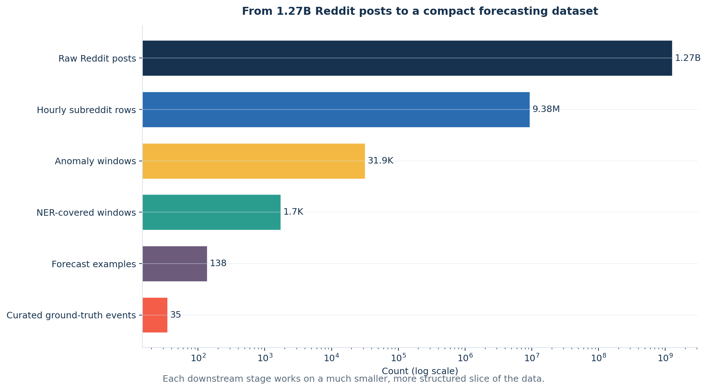
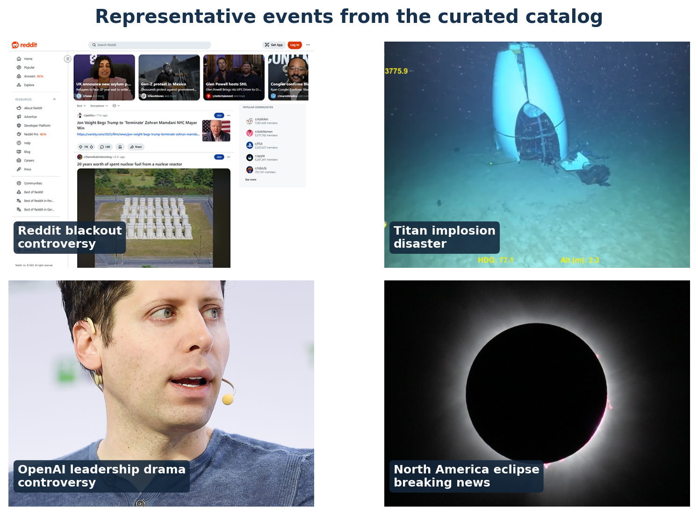
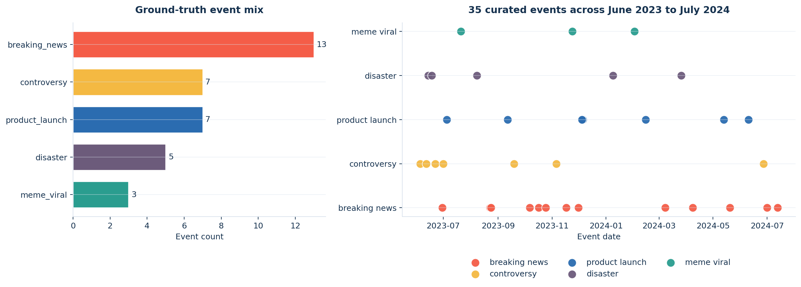
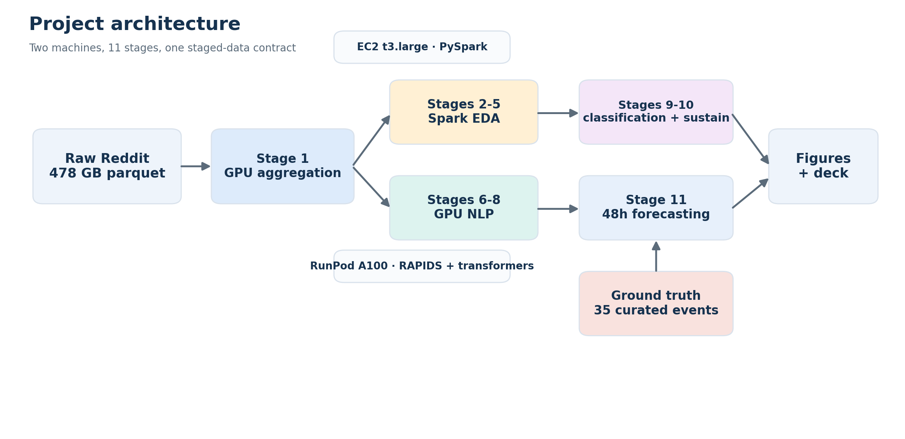
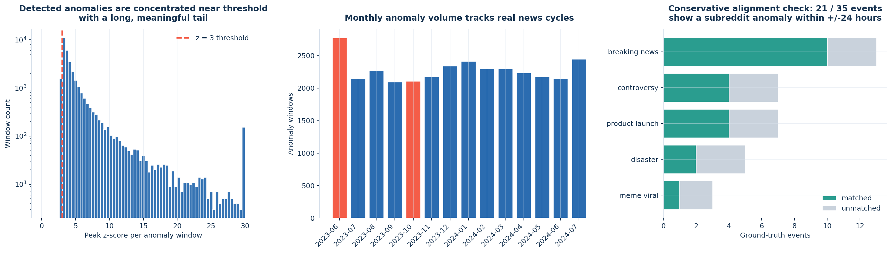
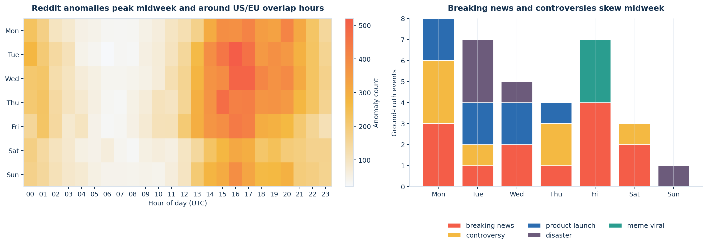
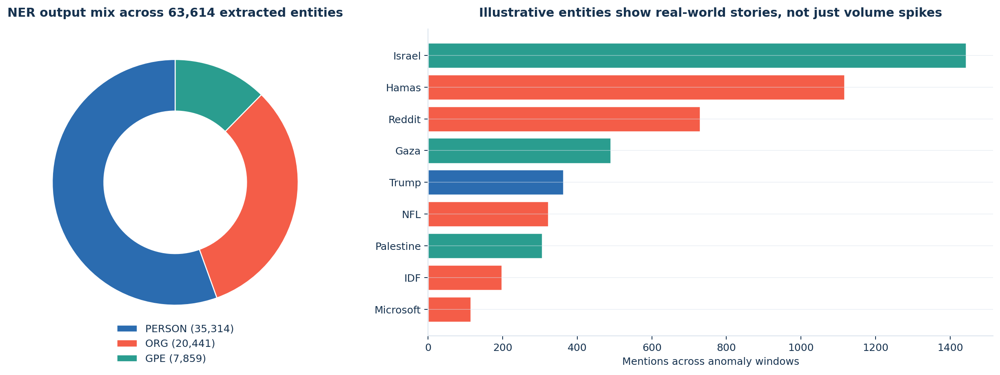
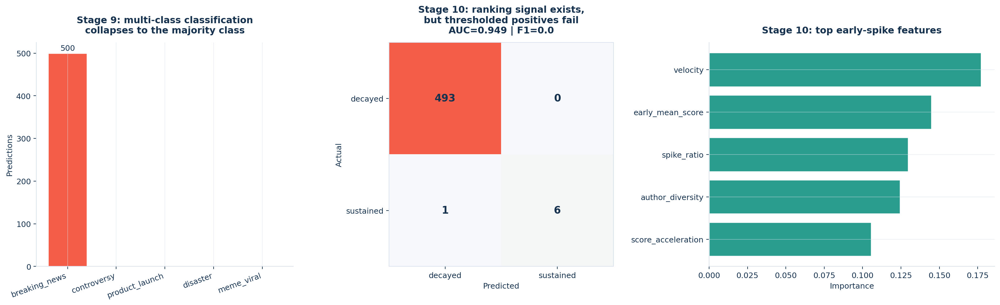
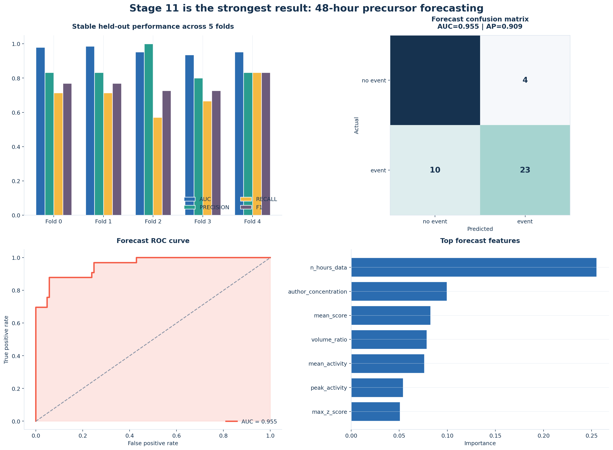
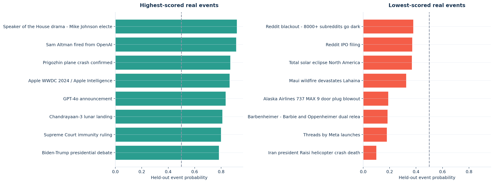

A 12-minute presentation built from the staged outputs in data/intermediate/
2026-04-01
Can Reddit act as a practical early-warning radar for real-world events?
Main story: at our current label volume, Reddit works better as a binary early-warning system than as a full event taxonomy engine.
Every number and figure in this deck was regenerated from the local staged outputs under data/intermediate/.

<h3>Journalism and media desks</h3>
<p>Flag emerging stories before they peak on mainstream outlets, especially in niche communities that move first.</p><h3>Trust and safety triage</h3>
<p>Spot coordinated attention spikes that may need moderation, escalation, or human review.</p><h3>PR and reputation monitoring</h3>
<p>Track whether concentrated author activity is building around a company, policy, or public figure.</p><h3>Product launch monitoring</h3>
<p>Measure whether launch-related chatter is building ahead of official announcements or broad press coverage.</p>Collective attention often moves before formal coverage does. If Reddit communities show measurable precursor behavior, the useful product is a triage signal: something important may be about to happen.
| Metric | Value |
|---|---|
| Time range | 14 months |
| Raw scale | 478 GB |
| Total posts | 1.27B |
| Top subreddits | 500 |
| Hourly rows after aggregation | 9.38M |
| Curated events | 35 |
| Category | Count |
|---|---|
| Breaking news | 13 |
| Controversy | 7 |
| Product launch | 7 |
| Disaster | 5 |
| Meme / viral | 3 |
Example events in the catalog: Reddit blackout, Titan implosion, Sam Altman / OpenAI, GPT-4o, total solar eclipse, and the Trump assassination attempt.



Static pipeline diagram showing the two-machine architecture and the 11-stage flow.
data/intermediate/ without rerunning the cloud pipeline.
The coverage check is intentionally strict: we require a listed subreddit and a time overlap within one day of the event date.

Tue 16:00 UTC, and weekday anomaly volume is materially higher than weekend volume.
This is why the timing signal appears here, while the propagation and morphology caveats move to the dedicated limitation slide.

<h3>What worked</h3>
<ul>
<li><strong>NER was the strongest NLP stage.</strong> We extracted <strong>63,614</strong> entity rows across <strong>1,738</strong> anomaly windows.</li>
<li><strong>The signal is narratively sensible.</strong> Israel, Hamas, Reddit, Gaza, Trump, NFL, and Microsoft all surfaced from real anomaly windows.</li>
</ul><h3>What remains partial</h3>
<ul>
<li><strong>Sentiment covered only 2 windows.</strong></li>
<li><strong>Topics covered 50 windows.</strong></li>
<li>Business takeaway: entity extraction already turns spikes into recognizable stories, even before the full sentiment and topic sweeps are complete.</li>
</ul>
<h3>Stages 9-10 were informative failures</h3>
<ul>
<li><strong>Stage 9 classification failed cleanly.</strong> All 500 predictions collapsed to <code>breaking_news</code>.</li>
<li><strong>Stage 10 had ranking signal but poor thresholded decisions.</strong> AUC was <strong>0.949</strong>, but positive-class F1 was <strong>0.0</strong> because only <strong>7 / 500</strong> cases were truly sustained.</li>
<li><strong>Main lesson:</strong> with this label volume, binary forecasting is a much better framing than five-class anomaly typing.</li>
</ul>
| AUC | F1 | Precision | Recall |
|---|---|---|---|
| 0.955 | 0.767 | 0.852 | 0.697 |
| Component | Why it cannot be used as-is | What we would fix next |
|---|---|---|
| Propagation | A 48-hour overlap rule collapsed the graph into one giant component. | Tighten to <=6 hours and require entity/topic overlap. |
| Spike shapes | 99.2% of windows became double_peak, which is a heuristic sensitivity issue. |
Sweep find_peaks thresholds or move to template fitting. |
| Sentiment | Only 2 windows completed, so there is not enough coverage for a claim. | Re-run the full GPU sweep over the NER-covered windows. |
| Topics | The 50-window probe produced mostly noise labels. | Run BERTopic across the full eligible corpus, not the probe subset. |
| Classification | Stage 9 predicted breaking_news for all 500 cases. |
Expand labels and add class balancing / semi-supervised labeling. |
| Sustain / decay | AUC was high, but thresholded positive precision and recall were zero. | Use class weighting and calibrate the decision threshold. |
These are fixable parameter, coverage, and label-volume problems. They do not invalidate the pipeline; they tell us where the next iteration should focus.
Reddit is not yet good at telling us exactly what kind of event is happening, but it is already surprisingly good at telling us that something important may be about to happen.
Questions?
Group 3 · Reddit as an Early Warning System

events.csv counts: 13 / 7 / 7 / 5 / 3.21 / 35 events within +/-24h on listed subreddits.RedditTitan submersible implosionSam AltmanSolar eclipse of April 8, 2024